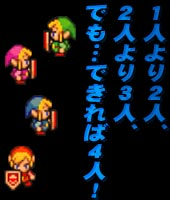
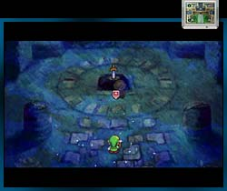
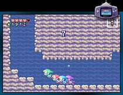
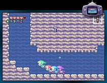
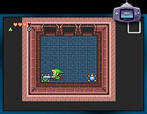
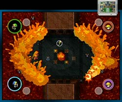
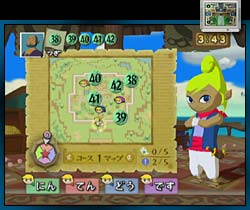
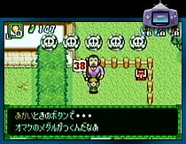

ゲームモードは３つ。それぞれが４人までの同時プレイで楽しめるようになっています。なかには１人でプレイできないモードも。なにしろ最初からGBAケーブルが同梱されているので、これは仲間を集めてみんなで遊ぶソフトのようですね！
４人のリンクが"シャドウリンク(悪のリンクとでもいうべき悪者)"を追って、各地で冒険を繰り広げるアクションアドベンチャー。従来のゼルダワールド的な遊び方だけでなく、４人のリンクがいなければできないプレイが求められます。
  
１人プレイ以外はGBAを接続して遊びます。地下に潜ったり、洞窟や民家に入ると手元のGBAに画面が展開。GBAを見たりテレビ画面を見たりで忙しい気分？ でも、このキョロキョロした感じが楽しさのスパイスに。あちこちに仕掛けがあってパズル要素もたっぷり、ダンジョンの区切りもいいので、友達同士で声をかけあって遊べば盛り上がること間違いなし。
最低２人のプレイヤーが必要なモードで、テレビ画面とGBA画面を行ったり来たり、"かくれんぼ"をしながら生き残りをかけて闘うモードです。難しいことを考える必要はありませんが、生き残り方式なので、やっているうちに「ヒットアンドアウェイ」のような闘いっぷりになってしまうのがミソ。アイテムを使ったり、隠れたり、スキを見てチョイチョイと攻撃したり。やっぱり手元のGBAとテレビ間の視線の往復がカギになりそうです。

どうやら正攻法で闘う人よりも、爆弾などのアイテムで挟み撃ちをしたりということができる、こずるい人が勝つゲームのような気がしてきました…。私はがんばって剣などで闘っていましたが、いちばん最初に倒れてしまうので、もう少し頭を使って非情になるべきだという感じです。合い言葉は「情け無用」？
ナビゲーターの声を頼りにフィールドのなかを駆け回り、海賊のメダルを番号順にゲットしていくゲームです。ひとりでもプレイ可能ですが、その場合はタイムアタックか、対戦相手としてチンクル(強さの調整可能)が指名できます。でも、これはやっぱりみんなで遊びたいモード。

まず名前を決めると、画面のなかのテトラが呼んでくれるのがいきなり嬉しい。自分の名前が呼ばれるってすごいですよね！ そして、途中途中でクイズやビンゴなどの小イベントが入ってくるのがまた楽しくてハマってしまいます。アイテムを集めたり、相手を出し抜いたり、クイズで賞品をゲットしたり。一瞬でも目を離すと、ほかのプレイヤーにメダルを取られてしまいますが、でもイベントも見逃したくない〜という楽しいジレンマで悩みそうです。進行具合に従って、テトラが色々と声をかけてくれるのが気持ちいいアクセントになっていて、ついつい繰り返しチャレンジしたくなるモードです。
|